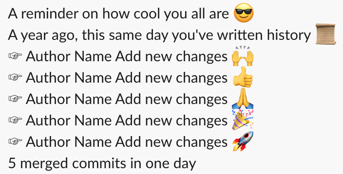

Rust cli app integrated with slack
2020-06-03The intention was to have a better overview about rust in the field (real world use case). So I decided to create an app with the following requirements
Read git history for a git project, selects commits made a year back in the same day as today, formats a pretty message with some emojis and sends it to a slack channel. The app is a cli app, with ability to install it as an osx launch agent, and configure what is necessary. The final product is on github.
Slack demo

Contents
- Sending messages to slack
- Reading git commits
- Getting time range for one day a year ago
- Creating the slack message
- Configuration
- Daemonize the process
- Commands
- Environments
- Conclusion
Sending messages to slack
Slack allows to create apps and have a pretty good documentation. I was searching for a way to post a message to a channel, and I found incoming web hooks. This was what I needed, a POST https request with the message I want, great 👍🏼
The app I needed to write, would live and run on my MacBook, and it would send messages to slack. I needed a command line application.
First I need to create an app thru slack web interface, here. Next, in the app's settings, under Features > Incoming Webhooks, activate the webhooks, and add a channel. For development purposes I have added myself, my app would send messages to me.
I am not a pro when it comes to low level network requests, so I googled to find a create to send HTTP requests. I found reqwest crate.
async fn send_to_slack(hook: &str, log: &String) -> Result<reqwest::Response, reqwest::Error> { let client = Client::new(); client .post(hook) // the web hook url .body(format!("{{\"text\": \"{}\"}}", log)) // the message to send to slack .send() .await }
The problem was how to use the async functions from the main function. Rust does not allow to write the main function as async. After some reading and browsing the internet, I found that rust by default does not use any async runtime, it is the programmer's choice which runtime to use. tokio is such a runtime.
#[tokio::main] async fn main() { send_to_slack().await }
Reading git commits
Reading log from git wasn't as easy as I thought. The crate that I have used is git2. It is wrapping libgit2 written in C.
I was imagining I would just call a log function with same arguments as I pass in the git cli. But it's not so easy, there is no such a function as log in the api.
If there is no log function, how does log works? The gitlib2 has a nice documentation with some examples, and I found the example of the log here. I was reading the file and the description on the right and found that log is using revwalk to walk thru commits. It uses git_revwalk_next to read the next commit.
In rust, Revwalk is a struct which implements Iterator trait. Very convenient to iterate thru commits. I can use all the rust iterator advantages 💪.
My first try was similar to this
if let Ok(repo) = Repository::open(&path) { if let Ok(mut revwalk) = repo.revwalk() { println!("{:?}", revwalk.next()); } else { println!("error revwalk"); } } else { println!("error repo"); }
It didn't work. The code is correct, it compiles, it sounds similar to what I saw in log.c file, but there is one thing I missed. There is a statement in git2 rust documentation: At least one commit must be pushed onto the walker before a walk can be started. I needed to push a starting commit from where I want to start walking the commits. There is a function that does exactly what I needed: push_head
This time it worked 🙌
if let Ok(repo) = Repository::open(&path) { if let Ok(mut revwalk) = repo.revwalk() { revwalk.push_head(); // this is required before revwalk is started println!("{:?}", revwalk.next()); } else { println!("error revwalk"); } } else { println!("error repo"); }
The Item of the Iterator in Revwalk struct is Oid, which is an identity of any object: commit, tree, blob, tag. In other words, it is a hash like this one 630d35363c52f4a65e902fafc404c0708532c4fe. I needed to get the commit object. This time log.c didn't help me. It is using git_commit_lookup function, which I didn't find in the git2 crate. I needed to find it myself browsing the documentation of git2, and I found it, find_commit function. It is available on the Repository struct. I would say git2 rust api is well structured, I like it.
With find_commit function, I can finally do what I need, take the author and the commit title. The Commit object has all needed functions
fn summarize(commit: &Commit) -> String { let name: String = commit.author().name().map_or("".into(), |name| name.into()); let short = commit .summary() .map(|s| String::from(s)) .unwrap_or("".into()); format!("{} {}", name, short) }
Getting time range for one day a year ago
I needed a time range of one day for a year ago, for example if today is 2020/05/28, then, I needed the range of date and time: 2019/05/28 00:00:00 - 2019/05/29 00:00:00. Date and time in general is not a simple topic. I didn't dive deeper into all aspects of the time, I needed only a simple use case. The standard library does not include a date time struct that I can use. So I needed to add some 3rd party crate. I found chrono, a great library.
I created a create_naive_date_time_range function, which returns a tuple with 2 date time objects, given the today date time. Naive types are DateTime without timezones, they are not aware of timezone. More documentation on this is in the chronos documentation here
fn create_naive_date_time_range( today: &NaiveDateTime, years_back: i32, ) -> (NaiveDateTime, NaiveDateTime) { let year_ago_date = NaiveDate::from_ymd( today.date().year() - years_back, today.date().month(), today.date().day(), ); let year_ago_next_day_date = year_ago_date.succ(); let year_ago_date_time = NaiveDateTime::new(year_ago_date, NaiveTime::from_hms(0, 0, 0)); let year_ago_next_day_date_time = NaiveDateTime::new(year_ago_next_day_date, NaiveTime::from_hms(0, 0, 0)); (year_ago_date_time, year_ago_next_day_date_time) }
To create the today date time, I used SystemTime from std library
fn get_today_naive_date_time() -> NaiveDateTime { if let Ok(now) = SystemTime::now().duration_since(UNIX_EPOCH) { NaiveDateTime::from_timestamp(now.as_secs() as i64, 0) } else { NaiveDate::from_ymd(2020, 04, 28).and_hms(22, 51, 28) } }
Git has it's own Time struct, and I had to convert the NaiveDateTime into a git2 Time.
use git2::{Time}; let (time_from, time_to) = ( Time::new(datetime_from.timestamp(), 0), Time::new(datetime_to.timestamp(), 0), );
Note: Later I realized that this step is unnecessary step, and I can just use seconds to compare the times.
Creating the slack message
I have used fold on the revwalker, as I said earlier, Revwalk implements Iterator. Firs I created a Vector of strings containing: Author Message
let summary = revwalk.fold(Vec::<String>::new(), |mut summary, oid| match oid { Err(_) => summary, Ok(oid) => match repo.find_commit(oid) { Err(_) => summary, Ok(commit) => { if self.is_valid_commit(&commit, &from, &to) { summary.push(summarize(&commit)); } summary } },
With this vector, I need to just decorate it with a little emojis 💄
const SUFFIX_EMOJIES: [char; 10] = ['🙌', '👍', '🙏', '🎉', '🚀', '🤘', '👏', '🙌', '👍', '🙏']; const START_ROW: &str = r#" A reminder on how cool you all are 😎 A year ago, this same day you've written history 📜 "#; pub fn prettify(commits: &Vec<String>) -> String { let mut index = 0usize; let mut commits_count = 0u16; let mut pretty = commits .iter() .fold(String::from(START_ROW), |mut pretty, commit| { pretty.push_str(&format!("☞ {} {} \n", commit, SUFFIX_EMOJIES[index])); index = increase_index(index); commits_count += 1; pretty }); pretty.push_str(&format!("{} merged commits in one day", commits_count)); if commits_count == 0 { "".into() } else { pretty } }
Note: Skin color emojis cannot be used, char does not support it. A very good explanation on this topic is here
The final message is ready to be send to slack 🙌
Configuration
I needed a config file to save and load webhook and git repo path. I chose confy because of it's simplicity.
The main thing I had to figure out, is where to save the configurations files. I wanted to do it in the correct way. OSX has a standard path for configuration files of the installed apps. The documentation about app's configuration files here. But, after reading the documentation there, I was thinking that for a CLI app which is going to be used by an engineer, it might not the best place to put config file. So I decided to see what are other options. Unix structure is more friendly to me and maybe many engineers who like to use terminal and cli apps. So I decided to save the file in $HOME/.config/<app>/
pub fn get_config() -> Result<Config, Box<dyn Error>> { let dirs = UserDirs::new().ok_or(ConfigError::UserHome)?; let path = dirs.home_dir(); let mut path_buf = path.to_path_buf(); path_buf.push(".config"); path_buf.push(super::APP_NAME); path_buf.push(crate::environment::get_config_file()); path_buf.set_extension("toml"); load_path(&path_buf.as_path()).map_err(|e| e.into()) }
Daemonize the process
I didn't want to run the app myself everyday, it needs to be run automatically by the operating system, and because I am using a Mac, I needed to create a launch agent for mac, apple documentation explains very well how it works and how to create one.
Basically I need to create a plist file in the ~/Library/LaunchAgents/ folder. I wanted to make my launch agent to run every weekday at 10:00. To achieve this, I had to use StartCalendarInterval key and a dict sections for every day.
<key>StartCalendarInterval</key> <array> <dict> <key>Weekday</key> <integer>1</integer> <key>Hour</key> <integer>10</integer> <key>Minute</key> <integer>00</integer> </dict>
To make the process simple, I wanted to add a command to be able to generate this file automatically using cli. So I added gitretro installd command, about commands on the next chapter commands
As per apple documentation, there a Program field which represents the path to the executable in the plist file. So I needed the path to executable
let exe_path = std::env::current_exe()?;
And generates the plist at the required path. I used the directories to generate the path
let dirs = UserDirs::new().ok_or(DaemonError::UserHome)?; let mut path_buf = dirs.home_dir().to_path_buf(); path_buf.push(format!( "Library/LaunchAgents/{}.plist", crate::environment::get_launch_agent_file() ));
Write data to the file
let data = create_launch_agent_plist_content()?; file.write(data.as_bytes())?; Ok(path_buf.to_string_lossy().into())
Commands
I love rust for how easy it is to handle cli commands, and I love this tutorial.
I wanted to handle a few commands: run, installd, config, help where:
- run: runs the app
- installd: creates a plist configuration for launch agent and writes it in user launch agents folder
- config: asks for repo path and slack web hook and saves the file
- help: no explanation needed
I created an enum
pub enum Command { Config, Run, InstallD, Invalid, Help }
Read the arguments passed to the app, but skip first one, because first argument is the binary path
let mut args = env::args().into_iter().skip(1);
And then read the next argument
match args.next() { Some(command) => { match &command[..] { "run" => Command::Run, "config" => Command::Config, "installd" => Command::InstallD, "--help" | "-h" => Command::Help, _ => Command::Invalid } }, None => Command::Invalid }
Note: String cannot be used as an argument to match, to bypass this, use full range slice &command[..]
Environments
The release version of the app sends messages to an internal channel of our team. While developing and testing features I needed to send messages to myself in slack. I needed 2 environments because the release version of the application will run as a daemon on my PC. In order to run 2 versions of the app, every instance of the app needs it's own config file, and it's own daemon configuration (plist).
I knew nothing about how this is done in rust. After some search on the internet, I decided to use conditional compilation. In the rust reference book, it is explained how to use --cfg flag with the rust compiler. But I am using cargo so I wanted more high-level way to handle this. And there is one: cargo features
Add this section to cargo.toml
[features] default = [] production = []
When a production executable is needed: cargo build --release --features "production"
In code, the cfg! is used:
pub fn get_config_file() -> &'static str { if cfg!(feature = "production") { "config" } else { "config_dev" } } pub fn get_launch_agent_file() -> &'static str { if cfg!(feature = "production") { "com.ionostafi.gitretro" } else { "com.ionostafi.gitretro_dev" } }
Next
There are some technical things I am looking to improve in the future
- reduce binary size
- reduce crates count
- research a more correct way for setting up dev and prod environments
And some app improvements
- group messages per author
- order by author commits number in that day
- support plurals
- log to a temp file while launch agent is running
While writing this blog, I realized, tokio crate is used only for it's futures runtime. This is first crate to be removed.
Conclusion
The initial goal was to feel for myself, the benefit of rust in a real world application. There is a steep learning curve at the beginning but once it is bypassed, the language is a beast in it's world. When I started to understand the language better, everything starts to make sense. It is hard to miss an unhappy path in the code, while on other languages it is easy to do so, here in rust, I feel like I am obligated to handle all the possible fails. It makes the application more error prone and gives the programmer a stronger feel of reliability.